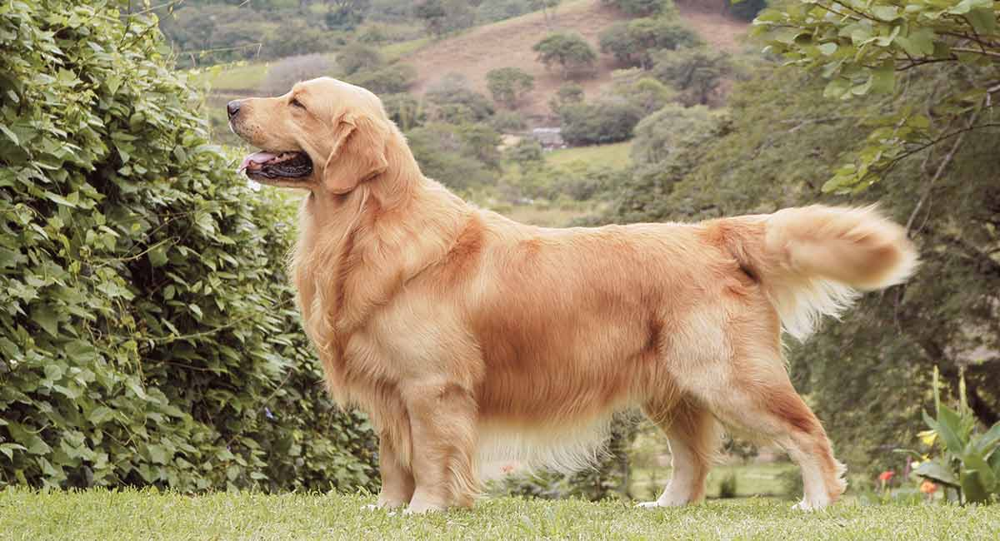

Disclaimer: Puppies have underdeveloped skelotons. If your dog is a puppy, please avoid long or vigorous exercise routines
Choose the category you would like to view!

Exercise Tips
Outdoor Exercise Ideas
Indoor Exercise Ideas
Exercise for Senior dogs
Tips on Exercising your Dog
- The amount of exercise your dog needs may vary depending on what kind of breed your dog is. For example, if your dog is a hunting or herding dog breed, your dog will need at least 30 minutes of exercise and 1-2 active hours everyday. If your dog is a smaller breed, they will not need as much exercise as the high energy breeds. Some examples of high energy breeds are Border Colllies, Siberian Huskies, and Australian Sheperd Dogs. Examples of low energy breeds are Bulldogs, Boston Terriers, and Basset Hounds. Make sure to check your dog's breed before you schedule an exercise routine for your dog.
- Check with your vet to make sure if your dog has any medical conditions that should be considered before you exercise your dogs, such as, heart diseases or joint issues.
- If you don't have enough time to exercise your dog, leave some toys for your dog to play with while you are gone. Hiring a dog walker or sending your dog to doggy daycare may also be an option for you.
- If you cannot go outside, consider indoor exercises!
Outdoor Exercise Ideas
Indoor Exercise Ideas
- Climbing the stairs at home a few times can provide great exercise for your dog. However, it is quite a strenuous exercise take caution with the amount of this exercise. Try not to push your dog too much. If your dog has joint problems, do not use this method of exerecising.
- Using the treadmill to exercise your dog may be useful for high-energy breeds. Always be cautious while exercising your dog with this method as it can be dangerous. Also remember that treadmills can not be a replacement for walks outside.
- Playing fetch or tug with dog toys at home can also help exercise your dog indoors.
- Playing hide-and-seek with your dog can also keep your dog moving at home!
Exercises for Senior Dogs
- Walking your dog is still a great exercise routine for senior dogs. You should pay more attention to the pace if your dog is older and be cautious of the weather. If it is too hot or too cold, your dog may feel uncomfortable outside.
- If you find a dog friendly pool, swimming is also a great exercise for elderly dogs. Swimming is good for dogs who have joint problems and it is easy on the body. Speak with your vet to find rehabilitation centers that will provide instructions if your dog does not know how to swim and also use a life vest for your dog for extra support.
- Use food puzzle toys that makes your dog work to get treats or food. It helps stimulate the brain and it will keep your dog active for a while.